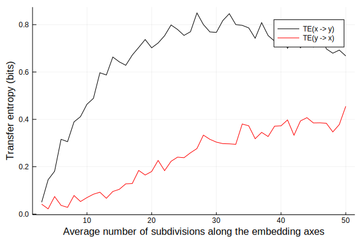

Example: measuring transfer entropy between two unidirectionally coupled logistic maps
Here, we present an example of how one can measure the influence between variables of a dynamical system using transfer entropy (TE).
Defining a system
For this example, we'll consider a unidirectionally coupled system consisting of two logistic maps, given by the vector field
with
The parameter c controls how strong the dynamical forcing is. If σ > 0, dynamical noise masking the influence of x on y, equivalent to \sigma \cdot \xi, is added at each iteration. Here, \xi is a draw from a flat distribution on [0, 1]. Thus, setting σ = 0.05 is equivalent to add dynamical noise corresponding to a maximum of 5 \% of the possible range of values of the logistic map.
Represent the system as a DiscreteDynamicalSystem
We first define the equations of motion.
function eom_logistic2(dx, x, p, n)
c, r₁, r₂, σ = (p...,)
ξ = rand() # random number from flat distribution on [0, 1]
x, y = x[1], x[2]
f_xy = (y + (c*(x + σ*ξ)/2) ) / (1 + (c/2)*(1+σ))
dx[1] = r₁ * x * (1 - x)
dx[2] = r₂ * (f_xy) * (1 - f_xy)
return
end
To make things easier to use, we create function that generates a DiscreteDynamicalSystem instance for any set of parameters r₁ and r₂, coupling strength c, initial condition u₀ and dynamical noise level σ. Selecting parameter values on [3.6, 4.0] yield mostly chaotic realizations of the maps, so we set the default to some random values on this interval.
function logistic2(;u₀ = rand(2), c = 0.0, r₁ = 3.66, r₂ = 3.77, σ = 0.05)
p = [c, r₁, r₂, σ]
DiscreteDynamicalSystem(eom_logistic2, u₀, p)
end
By tuning the coupling strength c, we may control the strength of the influence x has on y. Depending on the particular values of r₁ and r₂, the subsystems become synchronized at different values of c. Choosing c ∈ [0, 2] usually still gives some independence between the subsystems.
An example realization of the system when there is no coupling is:
s = logistic2(c = 0.0)
orbit = trajectory(s, 100)
x, y = orbit[:, 1], orbit[:, 2]
plot(x, label = "x", lc = :black)
plot!(y, label = "y", lc = :red)
xlabel!("Time step"); ylabel!("Value")
Delay embedding for transfer entropy
The minimum embedding dimension for this system is 4 (try to figure this out yourself using the machinery in DynamicalSystems.jl!).
We want to measure the information flow x \rightarrow y. To do this, we express the transfer entropy as a conditional mutual information. For that, we need an embedding consisting of the following set of vectors
where \nu is the forward prediction lag and \tau is the embedding lag. If a higher dimension was needed, we would add more lagged instances of the target variable y.
Construct the embedding
To construct the embedding, we use the customembed function as follows.
τ = 1 # embedding lag
ν = 1 # forward prediction lag
E = customembed(Dataset(x, y), Positions([2, 2, 2, 1]), Lags([ν, 0, -τ, 0]))
This means that y appears in the 1st, 2nd and 3rd columns of the embedding, with lags 1, 0 and -1, respectively. The 4th column is occupied by x, which is not lagged.
Keeping track of embedding information using TEVars
Keeping track of how the embedding is organized is done using a TEVars instance.
It takes requires as inputs the column indices corresponding to 1) the future of the target variable, 2) the present and past of the target, and 3) the present and past of the source variable, in that order. Let's define this for our system:
Tf = [1] # target, future
Tpp = [2, 3] # target, present and past
Spp = [4] # source, present (and past, if we wanted)
v = TEVars(Tf, Tpp, Spp)
The last field is an empty array because we are not doing any conditioning on other variables.
TE estimator
We will use the transfer operator grid TE estimator, found in the TransferOperatorGrid transfer entropy estimator. This estimator takes as input an embedding, given as a set of points, a RectangularBinning instance, and a TEVars instance.
We will compute TE over a range of bin sizes, for a slightly longer time series than we plotted before, with c = 0.7.
Embedding
Let's create a realization of the system, embed it and create a TEVars instance. We'll use these throughout the examples below.
# Orbit of the system
s = logistic2(c = 0.7)
orbit = trajectory(s, 500)
x, y = orbit[:, 1], orbit[:, 2]
# Embedding
τ = 1 # embedding lag
ν = 1 # forward prediction lag
E_xtoy = customembed(Dataset(x, y), Positions([2, 2, 2, 1]), Lags([ν, 0, -τ, 0]))
E_ytox = customembed(Dataset(y, x), Positions([2, 2, 2, 1]), Lags([ν, 0, -τ, 0]))
# Which variables go where?
Tf = [1] # target, future
Tpp = [2, 3] # target, present and past
Spp = [4] # source, present (and past, if we wanted)
vars = TEVars(Tf, Tpp, Spp)
Different ways of partitioning
The TransferOperatorGrid and VisitationFrequency transfer entropy estimators both operate on partitions on the state space.
There are four different ways of partitioning the state space using a RectangularBinning. The partition scheme is controlled by ϵ, and the following ϵ will work (check RectangularBinning documentation for more binning alternatives):
ϵ::Intdivide each axis intoϵintervals of the same size.ϵ::Floatdivide each axis into intervals of sizeϵ.ϵ::Vector{Int}divide the i-th axis intoϵᵢintervals of the same size.ϵ::Vector{Float64}divide the i-th axis into intervals of sizeϵᵢ.
Below, we demonstrate how TE may be computed using the four different ways of discretizing the state space.
Hyper-rectangles by subdivision of axes
First, we use an integer number of subdivisions along each axis of the delay embedding when partitioning (ϵ::Int).
ϵs = 1:2:50 # integer number of subdivisions along each axis of the embedding
te_estimates_xtoy = zeros(length(ϵs))
te_estimates_ytox = zeros(length(ϵs))
estimator = VisitationFrequency()
for (i, ϵ) in enumerate(ϵs)
binning = RectangularBinning(ϵ)
te_estimates_xtoy[i] = transferentropy(E_xtoy, vars, binning, estimator)
te_estimates_ytox[i] = transferentropy(E_ytox, vars, binning, estimator)
end
plot(ϵs, te_estimates_xtoy, label = "TE(x -> y)", lc = :black)
plot!(ϵs, te_estimates_ytox, label = "TE(y -> x)", lc = :red)
xlabel!("# subdivisions along each axis")
ylabel!("Transfer entropy (bits)")
As expected, there is much higher information flow from x to y (where there is an underlying coupling) than from y to x, where there is no underlying coupling.
Hyper-cubes of fixed size
We do precisely the same, but use fixed-width hyper-cube bins (ϵ::Float). The values of the logistic map take values on [0, 1], so using bins width edge lengths 0.1 should give a covering corresponding to using 10 subdivisions along each axis of the delay embedding. We let ϵ take values on [0.05, 0.5]
ϵs = 0.05:0.05:0.5
te_estimates_xtoy = zeros(length(ϵs))
te_estimates_ytox = zeros(length(ϵs))
estimator = VisitationFrequency()
for (i, ϵ) in enumerate(ϵs)
binning = RectangularBinning(ϵ)
te_estimates_xtoy[i] = transferentropy(E_xtoy, vars, binning, estimator)
te_estimates_ytox[i] = transferentropy(E_ytox, vars, binning, estimator)
end
plot(ϵs, te_estimates_xtoy, label = "TE(x -> y)", lc = :black)
plot!(ϵs, te_estimates_ytox, label = "TE(y -> x)", lc = :red)
xlabel!("Hypercube edge length")
ylabel!("Transfer entropy (bits)")
xflip!()
Hyper-rectangles of fixed size
It is also possible to use hyper-rectangles (ϵ::Vector{Float}), by specifying the edge lengths along each coordinate axis of the delay embedding. In our case, we use a four-dimensional, embedding, so we must provide a 4-element vector of edge lengths.
# Define slightly different edge lengths along each axis
ϵs_x1 = LinRange(0.05, 0.5, 10)
ϵs_x2 = LinRange(0.02, 0.4, 10)
ϵs_x3 = LinRange(0.08, 0.6, 10)
ϵs_x4 = LinRange(0.10, 0.3, 10)
te_estimates_xtoy = zeros(length(ϵs))
te_estimates_ytox = zeros(length(ϵs))
mean_ϵs = zeros(10)
estimator = VisitationFrequency()
for i ∈ 1:10
ϵ = [ϵs_x1[i], ϵs_x2[i], ϵs_x3[i], ϵs_x4[i]]
binning = RectangularBinning(ϵ)
te_estimates_xtoy[i] = transferentropy(E_xtoy, vars, binning, estimator)
te_estimates_ytox[i] = transferentropy(E_ytox, vars, binning, estimator)
# Store average edge length (for plotting)
mean_ϵs[i] = mean(ϵ)
end
plot(mean_ϵs, te_estimates_xtoy, label = "TE(x -> y)", lc = :black)
plot!(mean_ϵs, te_estimates_ytox, label = "TE(y -> x)", lc = :red)
xlabel!("Average hypercube edge length")
ylabel!("Transfer entropy (bits)")
xflip!()
Hyper-rectangles by variable-width subdivision of axes
Another way to construct hyper-rectangles is to subdivide each coordinate axis into segments of equal length (ϵ::Vector{Int}). In our case, we use a four-dimensional, embedding, so we must provide a 4-element vector providing the number of subdivisions we want along each axis.
# Define different number of subdivisions along each axis.
ϵs = 3:50
mean_ϵs = zeros(length(ϵs))
te_estimates_xtoy = zeros(length(ϵs))
te_estimates_ytox = zeros(length(ϵs))
estimator = VisitationFrequency()
for (i, ϵᵢ) ∈ enumerate(ϵs)
ϵ = [ϵᵢ - 1, ϵᵢ, ϵᵢ, ϵᵢ + 1]
binning = RectangularBinning(ϵ)
te_estimates_xtoy[i] = transferentropy(E_xtoy, vars, binning, estimator)
te_estimates_ytox[i] = transferentropy(E_ytox, vars, binning, estimator)
# Store average number of subdivisions for plotting
mean_ϵs[i] = mean(ϵ)
end
plot(mean_ϵs, te_estimates_xtoy, label = "TE(x -> y)", lc = :black)
plot!(mean_ϵs, te_estimates_ytox, label = "TE(y -> x)", lc = :red)
xlabel!("Average number of subdivisions along the embedding axes")
ylabel!("Transfer entropy (bits)")

Conclusion
The value of the TE depends on the system under consideration, and on the way one chooses to discretize the state space reconstruction.
For this example, TE is consistently larger for the expected direction TE(x -> y) than in the opposite direction TE(y -> x), where we expect no information flow.